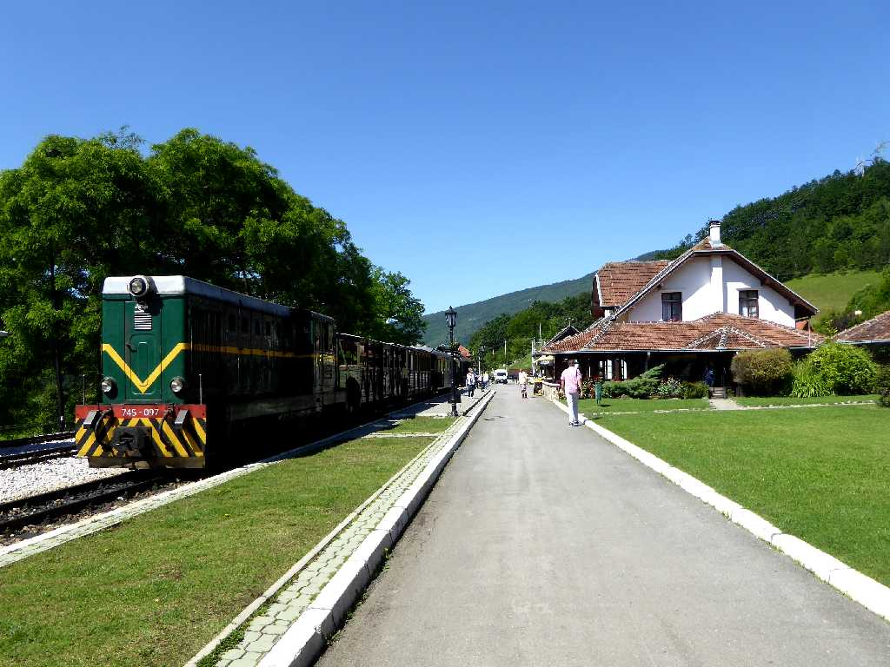
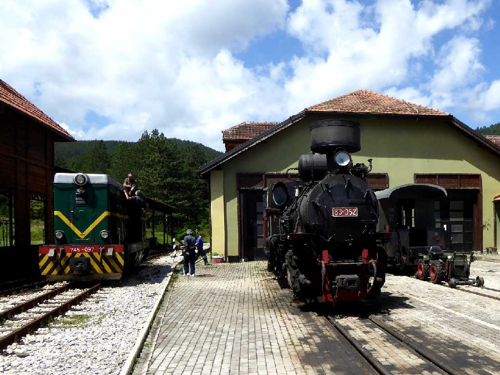
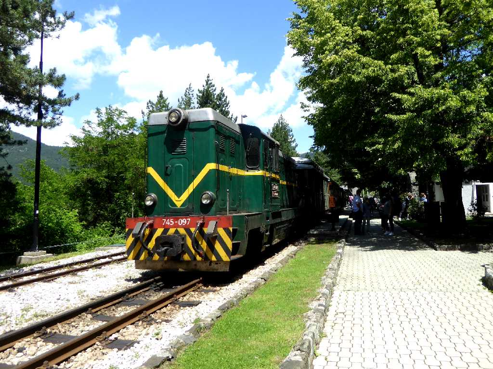
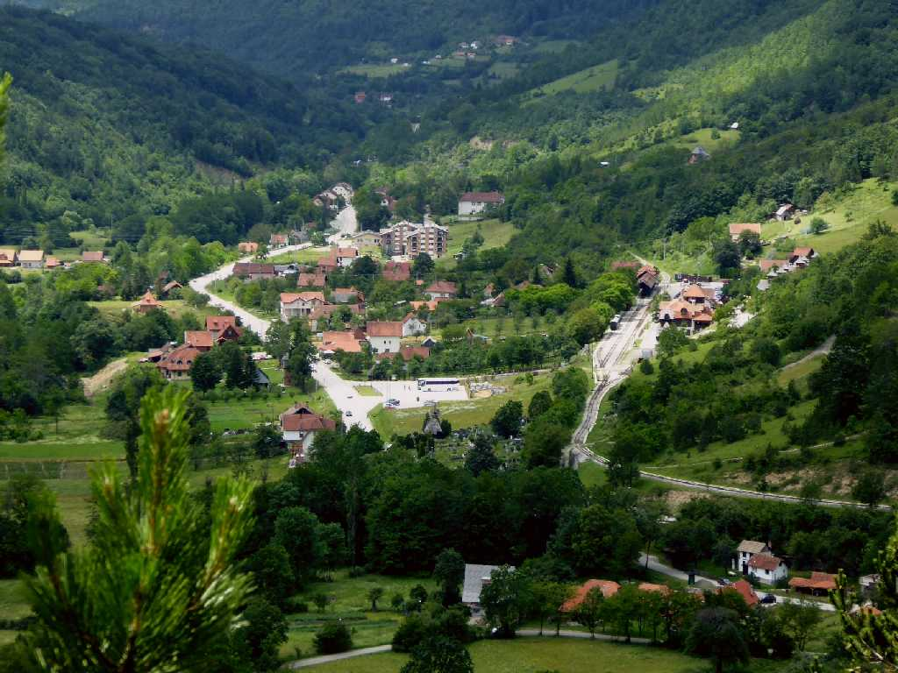
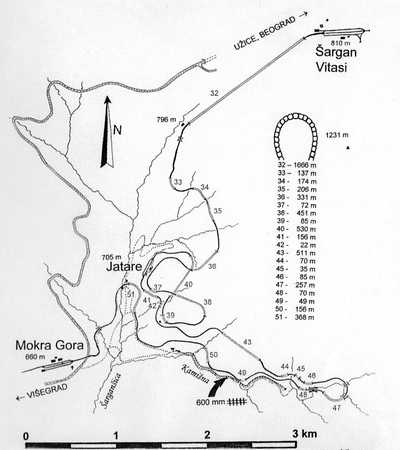
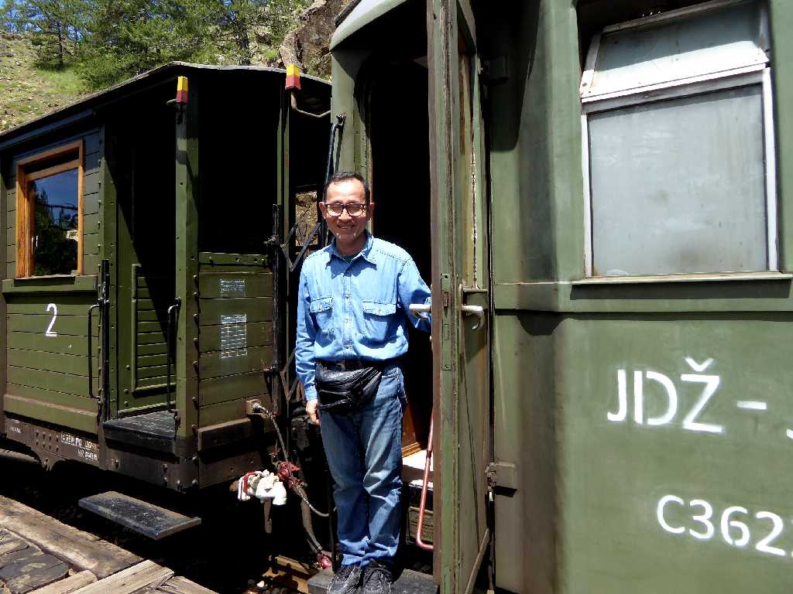

Mokra Gora Station Sargan 8
シャルガンエイト保存鉄道はベオグラードとサラエボ間４４４ｋｍを走っていた鉄道のうち８の字型の山間部を観光用に再開した鉄道

Vitasi Station Sargan 8

Jatare Staiton Sargan 8

Jatare Sargan 8
全長１５ｋｍ標高差３００ｍ(６００ｍ～９００ｍ)勾配１８％２０のトンネルを４０分ほどかけて登り往復する

Sargan 8

June 15 2016 Sargan 8